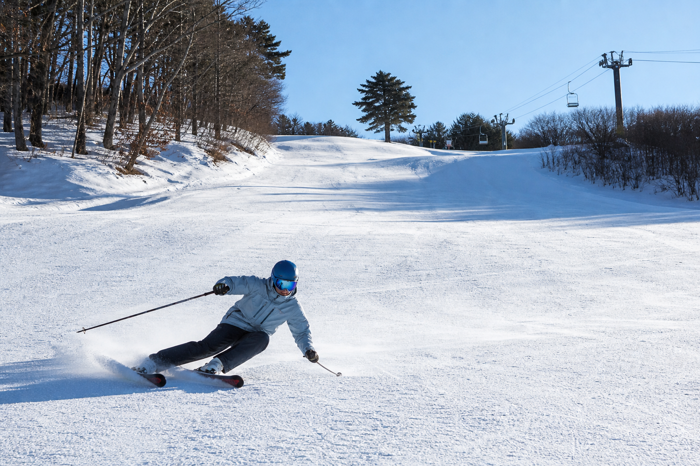
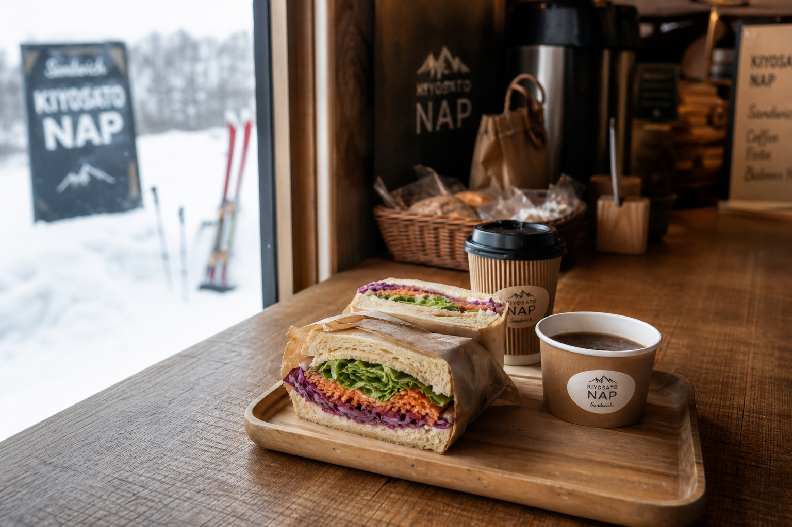
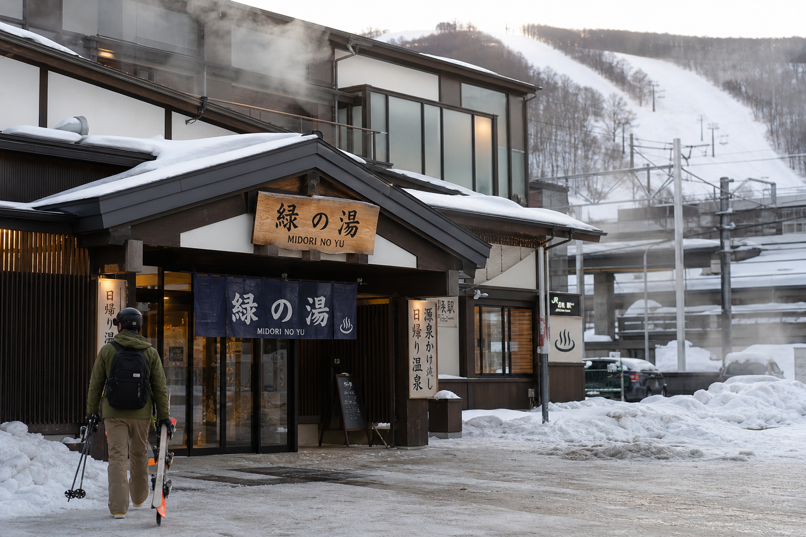

営業中 · リフト運行
パウダー · 良好
スノーパーク · オープン
LINE連携 · 更新 2/7 9:10

Transit Skiing
緑駅から、
徒歩5分。
JR釧網本線「緑駅」から約0.5km。車不要の鉄道旅行者にとって、全国でも稀有な駅チカゲレンデ。隣接する日帰り温泉「緑の湯」まで歩いて行けます。
- 1人乗りリフト
- コース2本
- 緑の湯 隣接
緑スキーの魅力
ここが違う
¥2,000のパウダー練習場
混雑しないローカルゲレンデで、本州とは比べられない雪質を1日2,000円で。Japowを求める層にとって、コスパと練習環境の両立が魅力です。
料金・回数券Local
NAPのサンドイッチ、
スノーパークの夜。
休憩小屋で営業する地元サンドイッチ店「NAP」——スキー場以上の滞在価値。2026年2月より復活したスノーパークと、火〜土のナイター（21時まで）で、町外の若年ボーダーもフックするコミュニティハブへ。
ナイター・イベント

Recovery
滑ったあと、
緑の湯へ。
スキー場に隣接する日帰り入浴施設「緑の湯」。Train · Powder · Onsen——3つを徒歩圏で完結する、インバウンド向けパッケージの核です。
手ぶら来場について：ゲレンデ内レンタルはありません。ヤマト運輸「スキー宅急便」や近隣宿泊施設との用具デリバリー提携など、民間連携による手ぶらプランをWebで案内する想定です。
手ぶらプランの案内
Day Trip
鉄道だけで完結する、
一日。
車を持たない旅行者・若年層向け「ゼロエミッション日帰りスノートリップ」のモデルコース。
ZERO EMISSION SKI TRIP01
JR緑駅
釧網本線で到着。徒歩5分でゲレンデ
02
パウダー＆パーク
空いたバーンで練習。スノーパーク体験
03
NAP
休憩小屋で地元サンドイッチランチ
04
緑の湯
隣接温泉で疲労回復
05
JRで帰路
そのまま駅へ。レンタカー不要
Access
所在地
〒099-4525
北海道斜里郡清里町緑町51-1
JR釧網本線「緑駅」から徒歩約5分（約0.5km）· 隣接「緑の湯」
TEL 0152-27-5512（清里町）